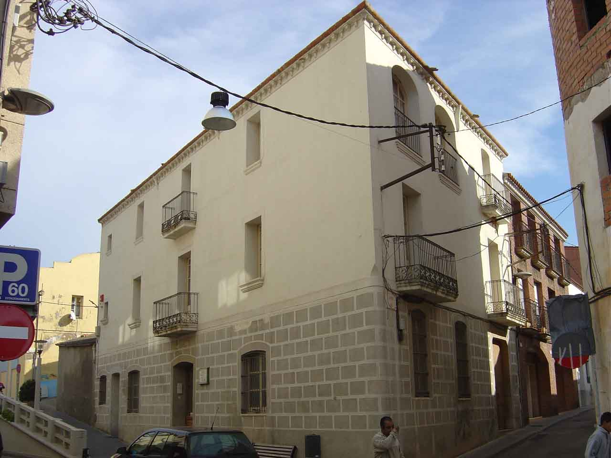
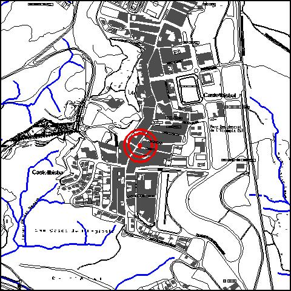

|  |  |
Nom de l’element: Museu de la Pagesia
Clau d’identificació: A.18
Nucli o indret: Nucli urbà (C/Pi i Maragall núm. 13).
UTM: X= 414.915, Y= 4.592.097.
Règim del sòl: sòl urbà
1.1. Època de construcció i tipologia:
Edifici del 1869, de planta trapezoïdal, construït com a ampliació d’un habitatge preexistent (Can Pau Margarit). Té planta baixa i dues plantes pis i originàriament, no disposava d’escala, ja que s’accedia a cada planta per la corresponent de l’edifici principal. La planta baixa està coberta per una bòveda de canó (que va ser tallada parcialment per la posterior construcció de l’escala central al 1910). La primera planta pis té bigues de fusta, voltes fetes de maó i la coberta reposa sobre bigues de fusta, llates i un encadellat. Es destaca la sobrietat de les formes. Al 1915 va ser adquirit per l’Ajuntament i va esdevenir Casa de la Vila fins el 1965. El Museu de la Pagesia s’inaugurà al 1985.
1.2. Estat de conservació:
Molt bo. Tots els elements estructurals presenten un bon estat de conservació.
1.3. Ús actual:
Museu Municipal de la Pagesia.
1.4. Accés:
Edifici del 1869, de planta trapezoïdal i una bòveda de canó a l’interior.
3.1. Usos admesos:
Recreatiu cultural i social, oficines i serveis.
3.2. Condicions d’ordenació:
Segons Pla Especial a redactar.
3.3. Accés i serveis:
Accés des del c/ Pi i Maragall.
BPU (Bé Protegit Urbanísticament)